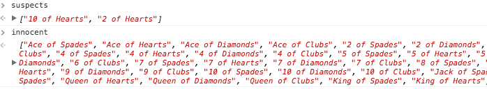

Ma
g
ic
T
ri
c
k
Strategy 1:
- Find a scenario where the same person says "it was the" or "it wasn't the" twice.
- If that scenario is found put the 2 cards referrenced into a suspects list
- Put the remaining cards into the innocent list
- 
- If a card is in the innocent list we are able to determine if an accusation is now a Truth/Lie.
- If a card is in the suspect list we mark those accusations as Not Sure.